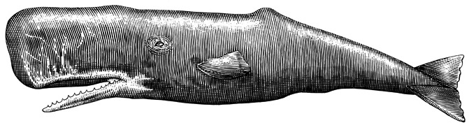

vous
ressentir
RESTEZ ALLER BIEN
" Je crois aux vertus de l’optimisme. Ce n’est pas facile, mais ça ne sert à rien d’être pessimiste. Anticiper le malheur, c’est le vivre deux fois. Mieux vaut croire que les choses vont aller mieux. "
Jean Pierre BACRI
Jean Pierre BACRI

Ressentir nait du latin "sentire" qui stipulait percevoir par les sens, puis par déclinaison "être d’un certain avis, penser" et, dans la langue juridique et politique, "décider". Ainsi, ressentir c'est percevoir, saisir quelque chose par intuition, donc inconsciemment. Nous pouvons cependant différencier : "aller bien" qui est structuré par des données objectives et factuelles (par exemple des mesures biologiques) et "ressentir aller bien", sentiment qui se place dans une dynamique subjective et flexible, colorisé par la perception émotionnelle, possible suggestion centrale de notre écologie mentale.
Vous ressentez allez bien, alors servez-vous en ! Un peu comme dans la médecine traditionnelle chinoise, le rôle du guérisseur n'est pas de soigner mais d'empêcher que le sujet tombe malade. Une des richesses de l'hypnose est de valoriser nos ressources et nos capacités, surtout quand nous nous sentons bien. Alors, de se donner le moyen de faire perdurer ce ressenti positif au travers des épreuves de vie à venir est un gage d'équilibre.
Vous ressentez allez bien, alors servez-vous en ! Un peu comme dans la médecine traditionnelle chinoise, le rôle du guérisseur n'est pas de soigner mais d'empêcher que le sujet tombe malade. Une des richesses de l'hypnose est de valoriser nos ressources et nos capacités, surtout quand nous nous sentons bien. Alors, de se donner le moyen de faire perdurer ce ressenti positif au travers des épreuves de vie à venir est un gage d'équilibre.
Concevez cette séance d'hypnose comme préventive afin de renforcer ses atouts et d'anihiler croyances limitantes et autres obstacles prévisibles (ou pas). Cette séance hypnotique préventive va à l'essentiel :
le renforcement motivationnel.
Pour quelles ressources par exemple ? Pour ne prendre que les plus usuels :
le renforcement motivationnel.
Pour quelles ressources par exemple ? Pour ne prendre que les plus usuels :
- le renforcement de l'arrêt du tabac
- le maintien de la créativité
- une satisfaction autour de l'humeur
- un relationnel de qualité
- un élan positif dans l'entreprenariat
- s'occuper de soi
- prendre du plaisir à être soi
- maintenir l'inhibition d'un comportement freinant
- etc.
EN RELATION
ATARAXIE
AFFIRMATION
(bonheur)
PERFORMANCE
VISION
PERSONNALITE